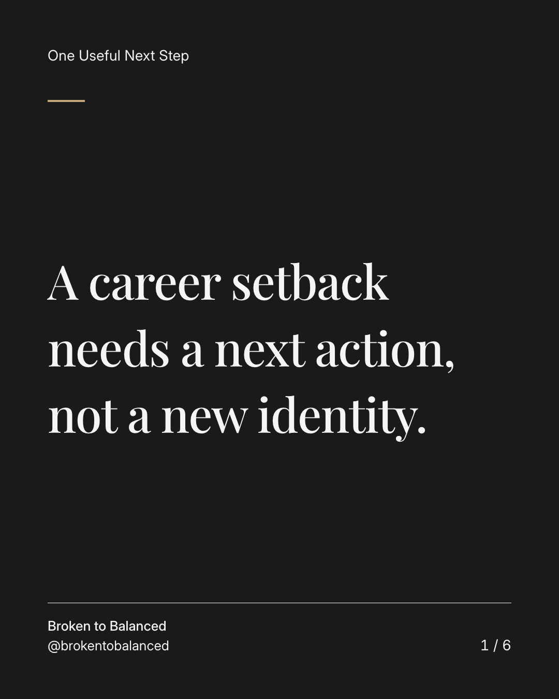
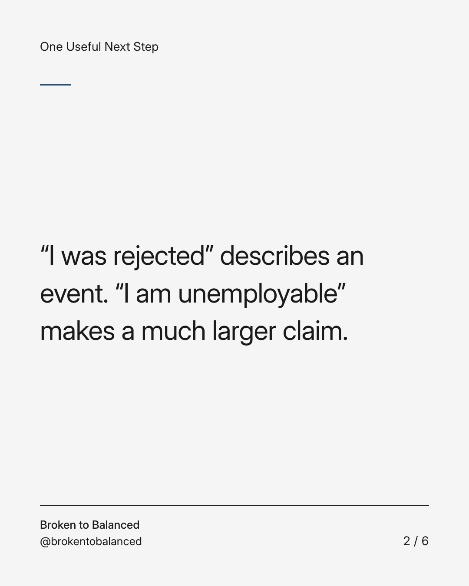
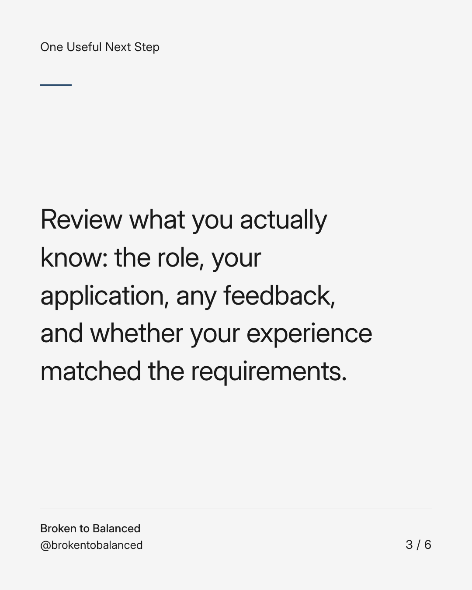
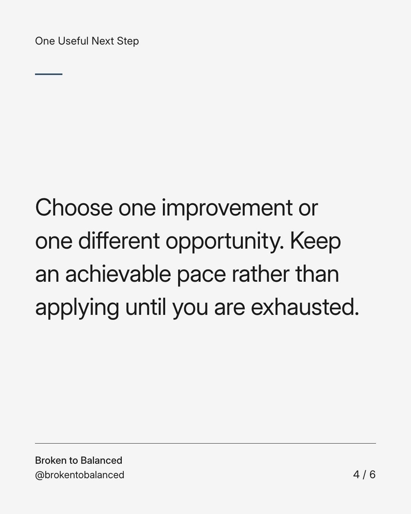
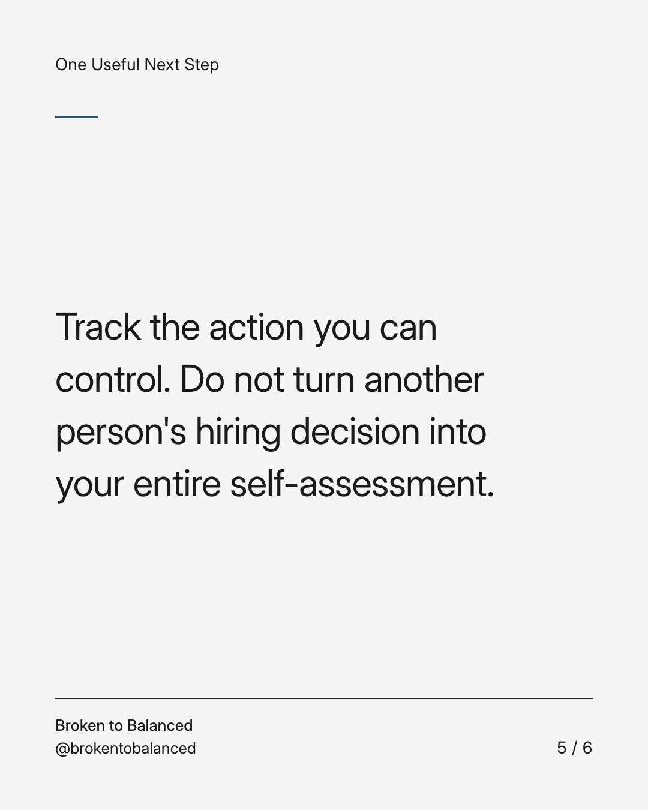
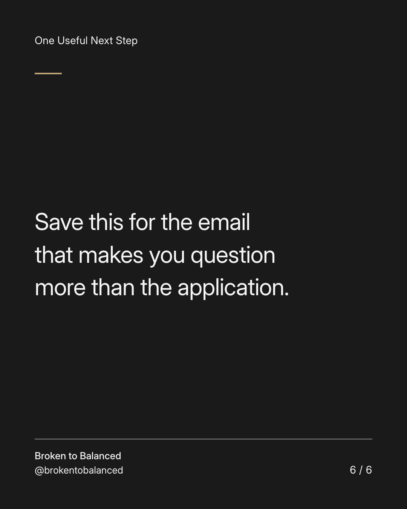

Exact text and accessibility text
A career setback needs a next action, not a new identity.
Slide 1 of 6. A career setback needs a next action, not a new identity.


Exact text and accessibility text
“I was rejected” describes an event. “I am unemployable” makes a much larger claim.
Slide 2 of 6. “I was rejected” describes an event. “I am unemployable” makes a much larger claim.


Exact text and accessibility text
Review what you actually know: the role, your application, any feedback, and whether your experience matched the requirements.
Slide 3 of 6. Review what you actually know: the role, your application, any feedback, and whether your experience matched the requirements.


Exact text and accessibility text
Choose one improvement or one different opportunity. Keep an achievable pace rather than applying until you are exhausted.
Slide 4 of 6. Choose one improvement or one different opportunity. Keep an achievable pace rather than applying until you are exhausted.


Exact text and accessibility text
Track the action you can control. Do not turn another person's hiring decision into your entire self-assessment.
Slide 5 of 6. Track the action you can control. Do not turn another person's hiring decision into your entire self-assessment.


Exact text and accessibility text
Save this for the email that makes you question more than the application.
Slide 6 of 6. Save this for the email that makes you question more than the application.
Exact caption
Plain-text fallback: select and copy the caption.